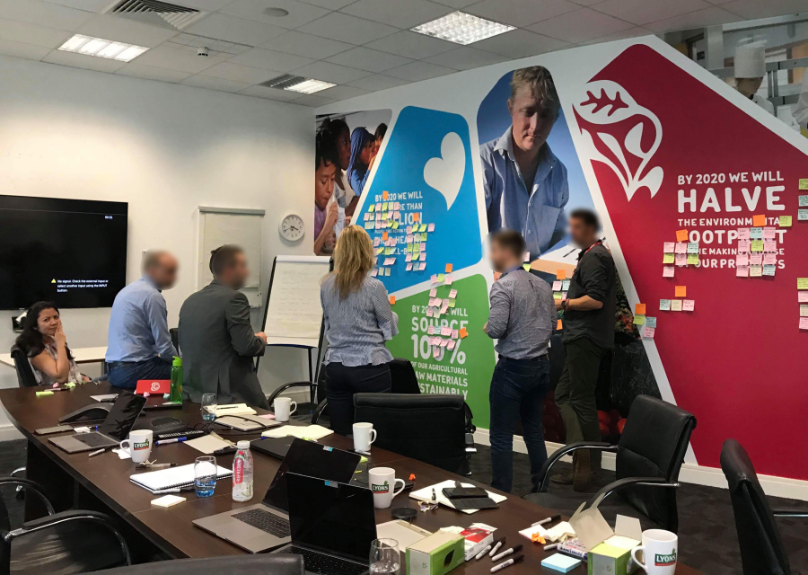
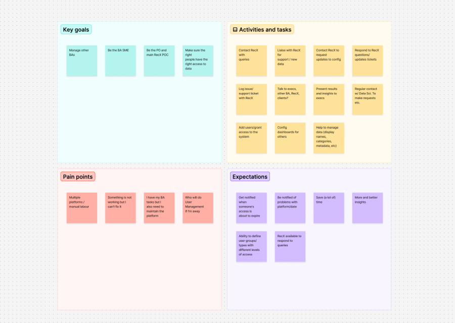
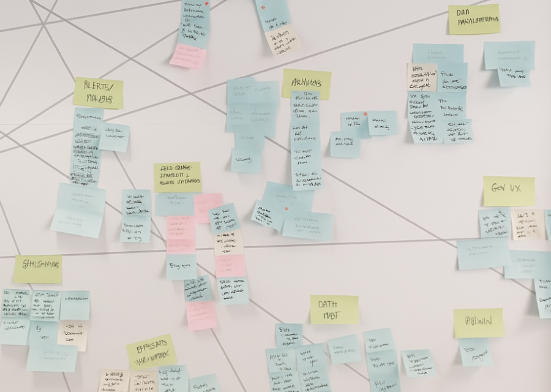
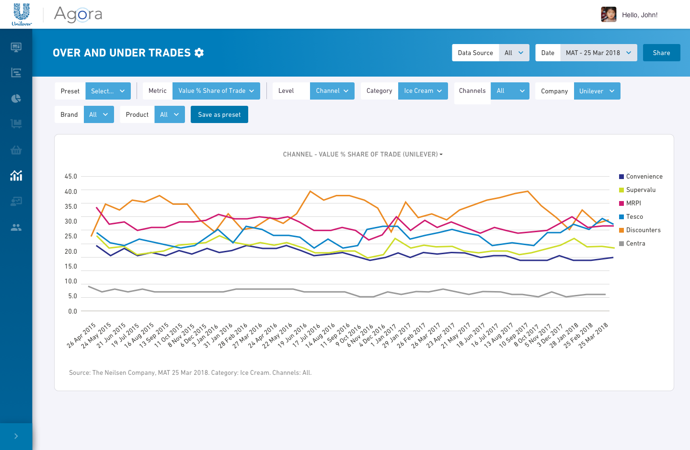
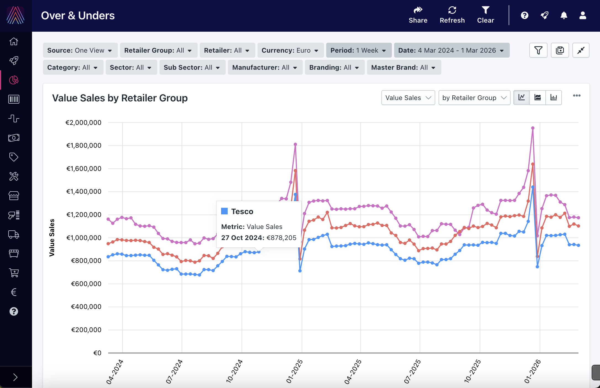
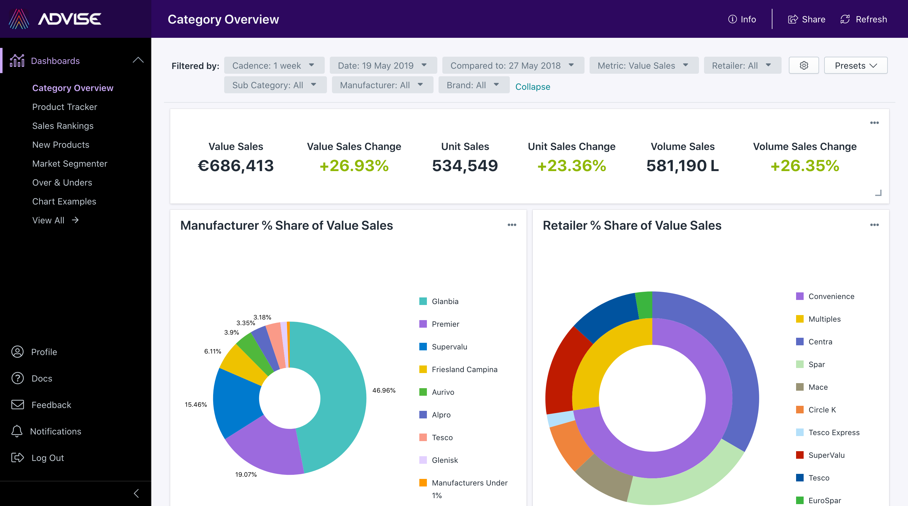
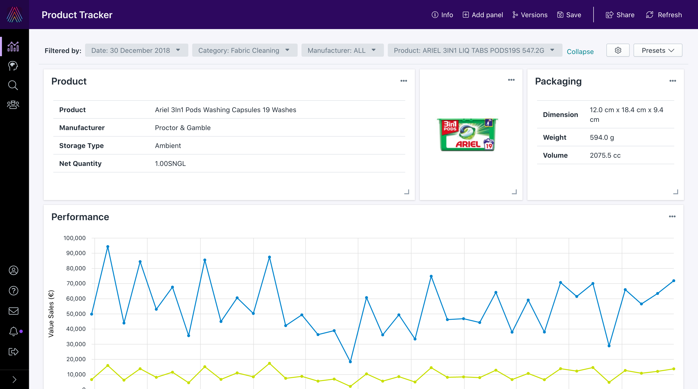
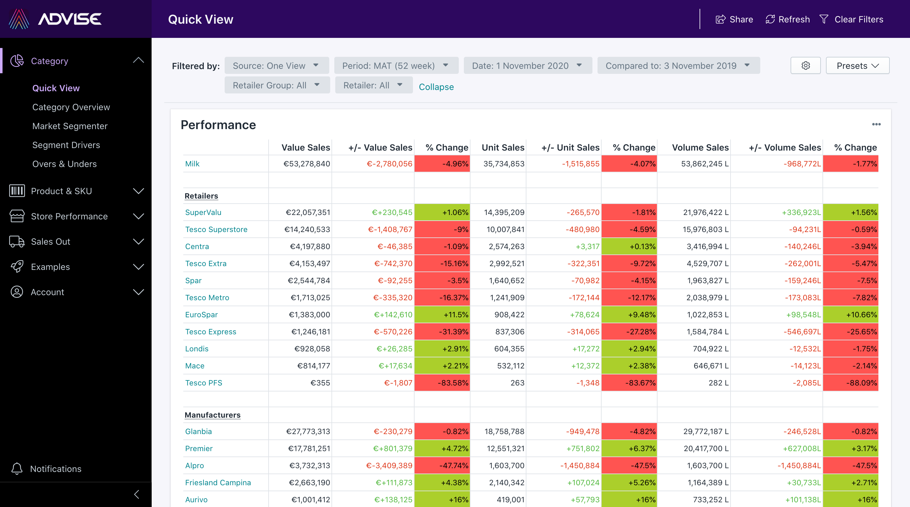
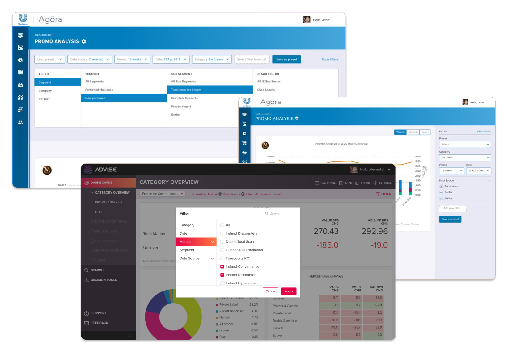
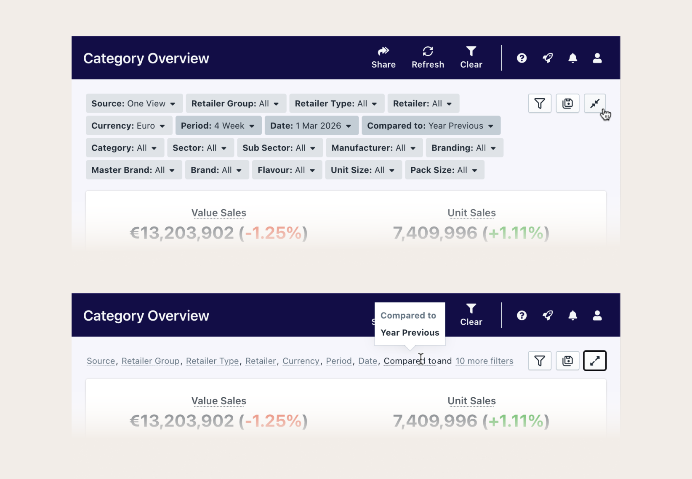

Designing a unified analytics platform that eliminated portal-hopping and manual data consolidation, allowing CPG analysts to focus on insights, not spreadsheets.

Designing a unified analytics platform that eliminated portal-hopping and manual data consolidation, allowing CPG analysts to focus on insights, not spreadsheets.
The problem
Analysts were juggling multiple market research portals, manually exporting data, and consolidating it into Excel and PowerPoint reports. The process was time-consuming, error-prone, and left little room for the strategic analysis the business actually needed.
Suzy Ford, Global Shopper and Customer Marketing Director, Unilever
Research and Planning
We facilitated workshops with Unilever staff and the cross-functional internal team to understand user goals, workflows, and pain points. Affinity mapping, empathy mapping, personas, journey mapping, and card sorting shaped our understanding of the problem and informed the MVP scope. I managed synthesis and documentation throughout, keeping the team aligned on findings and feasibility.
One of the central challenges throughout was designing for two horizons at once: meeting Unilever's immediate needs while building a platform flexible enough to serve future clients and use cases.

Affinity mapping workshop at Unilever, synthesizing findings that shaped the data visualization module

Building a shared understanding of Unilever users' goals, needs, and frustrations

Mapping the broader Advise platform vision, a modular system spanning data visualization, decision tools, and search and discovery
Pain Points
Analysts pulled data from multiple market research portals before they could even begin their analysis. Each portal had different KPIs, different time frames, and different formats.
Data had to be manually exported, consolidated, and formatted in Excel and PowerPoint. Time that should have gone into insight generation went into report building instead.
Existing portals were built for analysts. C-level users who only needed high-level summaries had no way to customize their view.
From MVP to Advise 2.0
The first version of Advise was built on an open-source data visualization platform. The rationale was sound: deliver value faster than building from scratch. Working with Unilever, we built Agora, the MVP that put the platform concept to the test.
But as the project progressed, the limitations of the open source architecture became clear. New chart types had to be built, navigation and filtering needed rethinking, and the plugin-based structure was restricting flexibility, making it increasingly difficult to design for future clients and use cases.
Rather than continuing to work around the constraints, the team decided to build a separate platform entirely. This became Advise 2.0.

Agora , the open source MVP built for Unilever

Advise 2.0, rebuilt from scratch to support flexibility, scale, and future clients. The redesign addressed the open source platform's limitations, introducing a new design system, improved navigation, and a more flexible dashboard architecture.
Design and Delivery
I designed wireframes and UI across all MVP dashboards and contributed to Advise 2.0. I produced functional specifications for all dashboards I worked on, translating complex, multi-source data requirements into detailed documentation that bridged client needs and technical implementation.



The open source navigation wasn't built for a platform with multiple dashboards and nested content. It lacked submenu support and gave users no clear indication of where they were.
I designed the navigation with responsiveness in mind from the start, working mobile first to ensure it would work across all screen sizes. Starting with paper and whiteboard sketches, I progressed through wireframes to a detailed specifications document covering behavior across both mobile and desktop.
Mobile navigation , final interaction design. The nav adapts its interaction model between mobile and desktop, with full submenu support and clear active state indicators. Starting from paper sketches, I progressed through wireframes to a detailed specifications document covering behavior across all breakpoints.
With dashboards containing dozens of metrics, filtering was critical. But the MVP filter panel was bulky and static, consuming too much vertical space.
I explored several approaches: a horizontal split panel with nested filters, a side drawer that pushed content right, and a modal-based system showing only applied filters. Working closely with the frontend team, we evaluated each against technical feasibility and user needs.
The final solution consolidated each filter into a compact Label: Value container with a collapsed state revealing values on hover, maximising dashboard real estate without sacrificing filter visibility.

Filter explorations. Concepts included a horizontal split panel, side drawer, and modal approach

Final solution. Compact Label: Value containers with expanded and collapsed states
Outcome
Advise is a live product, actively used by CPG companies to consolidate market research data and generate insights faster. By eliminating portal-hopping and manual report building, the platform gave analysts back the time they needed to focus on what actually mattered: understanding their market and making better decisions.
Visit advisecpg.com ↗